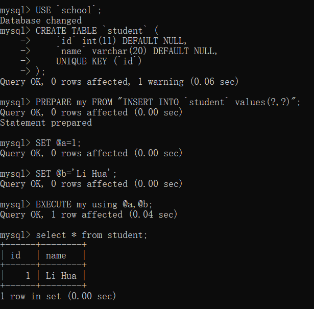

SQL注入与XSS
[TOC]
SQL 注入
概念
SQL注入是比较常见的网络攻击方式之一，它不是利用操作系统的BUG来实现攻击，而是针对程序员编写时的疏忽，通过SQL语句，实现无账号登录，甚至篡改数据库。
威胁
- 猜解后台数据库，盗取网站的敏感信息。
- 绕过认证，列如绕过验证登录网站后台。
- 借助数据库的存储过程进行增删改查等操作。
SQL 注入攻击实例
1 | SELECT * FROM user_table WHERE username= |
更详细的实例：sql注入基础原理（超详细） - 简书 (jianshu.com)
如何防御 SQL 注入
- “外部数据不可信任”原则。对用户的输入进行校验，检查变量的数据类型和格式，对特殊符号进行过滤或者转义。
- 绑定变量，使用预编译语句。不要使用动态拼接 sql。
- 不要使用管理员权限的数据库连接，为每个应用使用单独的权限。
- 对敏感信息加密。
SQL 预编译
通常一条普通 sql 语句的执行分为下面三步：
- 语法和语义解析
- 优化 sql 语句，制定执行计划
- 执行并返回结果
这种普通语句称作 Immediate Statements。
但是很多时候一条 sql 语句会反复执行，或者每次执行只是个别值不同，那么就可以使用预编译语句。
所谓预编译语句就是将这类语句中的值用占位符替代，可以视为将 sql 语句模板化或者参数化，一般称这类语句叫 Prepared Statements。
一次编译，多次运行，省去了解析优化的过程，大大提高效率。
MySQL 预编译实例：
1 | USE `school`; |

释放一条预编译语句：DEALLOCATE PREPARE my;
采用预编译方法可以生成临时变量集，为临时变量集里的元素赋值会对传入的参数进行强制类型检查和安全检查，所以可以避免 SQL 注入攻击。
XSS
概念
跨站脚本攻击（XSS），是最普遍的 Web 应用安全漏洞。这类漏洞能够使得攻击者嵌入恶意脚本代码到正常用户会访问到的页面中，当正常用户访问该页面时，则可导致嵌入的恶意脚本代码的执行，从而达到恶意攻击用户的目的。
危害
- 网络钓鱼，包括获取各类用户账号；
- 窃取用户cookies资料，从而获取用户隐私信息，或利用用户身份进一步对网站执行操作；
- 劫持用户（浏览器）会话，从而执行任意操作，例如非法转账、强制发表日志、电子邮件等；
- 强制弹出广告页面、刷流量等；
- 进行恶意操作，如任意篡改页面信息、删除文章；
- 进行大量的客户端攻击，如 DDOS；
- 获取客户端信息，如用户的浏览历史、开放端口等；
- 控制受害者机器向其他网站发起攻击；
- 传播跨站脚本蠕虫等。
原理
HTML 是一种超文本标记语言，通过将一些字符特殊地对待来区别文本和标记，例如，小于符号（<）被看作是HTML 标签的开始，<title> 与 </title> 之间的字符是页面的标题等等。当动态页面中插入的内容含有这些特殊字符（如 <）时，用户浏览器会将其误认为是插入了 HTML 标签，当这些 HTML 标签引入了一段 JavaScript 脚本时，这些脚本程序就将会在用户浏览器中执行。所以，当这些特殊字符不能被动态页面检查或检查出现失误时，就将会产生 XSS 漏洞。
当一个 Web 程序的用户输入点没有进行校验和编码，将很容易导致 XSS。
如何防御 XSS
- 使用 XSS Filter
- 输入验证。对用户提交的数据进行有效验证，仅接受指定长度范围内的，采用适当格式的内容提交。
- 数据消毒。过滤 ||<> ‘ “&# javascript expression 等敏感字符。
- 对输出进行转义编码
- 白名单和黑名单
- 定制过滤策略
- 避免客户端文档重写、重定向等敏感操作，避免使用客户端数据。
参考资料：
[1] 夏辉等：MySQL数据库基础与实践. 北京：机械工业出版社，2017